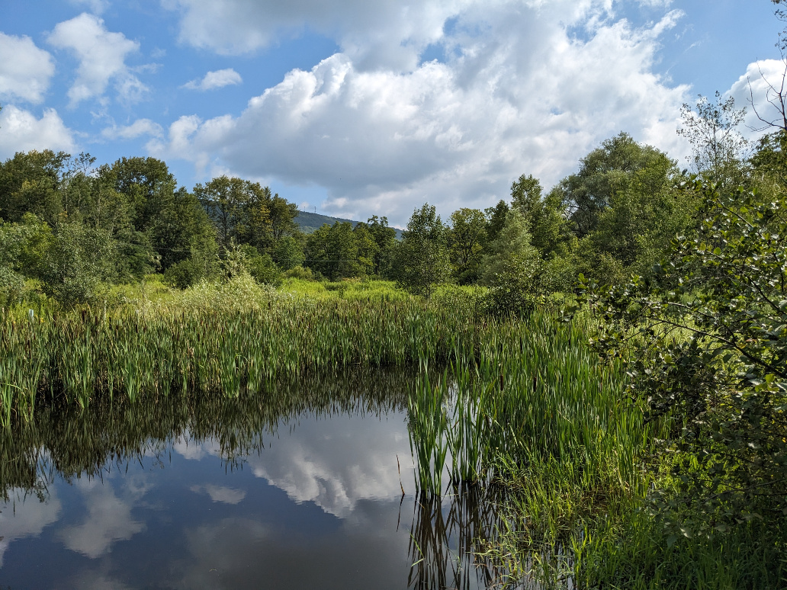

Concept
Two vernal pools were established in 2005 in a wet, former agricultural field of some 4 acres. The area lies below the farm lane and North of the Riparian SouthWest section of stream. The pools tend to fill up during the winter and dry out - or nearly so - during the summer. This dynamic system, too shallow to support fish, provides habitat for a wide variety of wildlife, including herons of several types, frogs and other amphibians, aquatic insects, and native mammals. Whereas the pools themselves occupy only about an acre, the entire 4-acre tract is accessible by mowed paths and includes a wide variety of shrubs, trees, and gaminoids. Current emphasis is to increase the canopy over and around the pools to effect a forest setting.The pools were designed by Adam Smith of the U.S. Fish and Wildlife Service and built in 2005 through a grant obtained by the Penns Valley Conservation Association (PVCA) from the Pennsylvania Growing Greener / DEP Program.Steps
- Select a site
- The segment of the wetland noted above, selected (complete)
- Record it
- Plan changes
- Species whose numbers could be increased
- Species whose numbes could be decreased
- Species not currently pesent whose introduction could be beneficial
- Define plant palettes
- Planting Map
- Implement
- Sequence of actions
- Resources needed not currently available
- Timeline
- Assess
- Narrative
- Data
- Notes